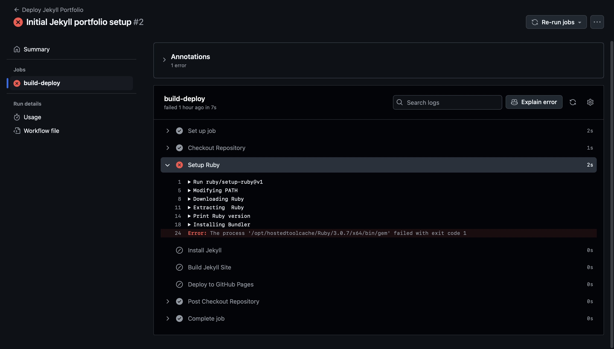
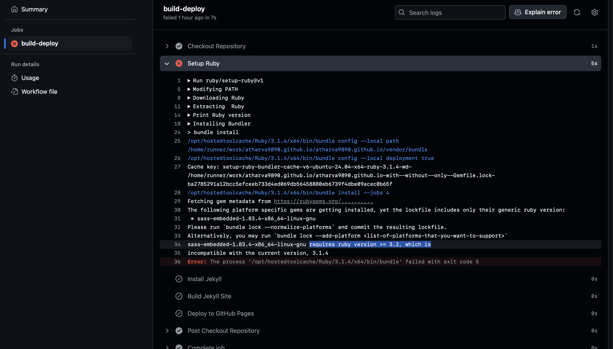
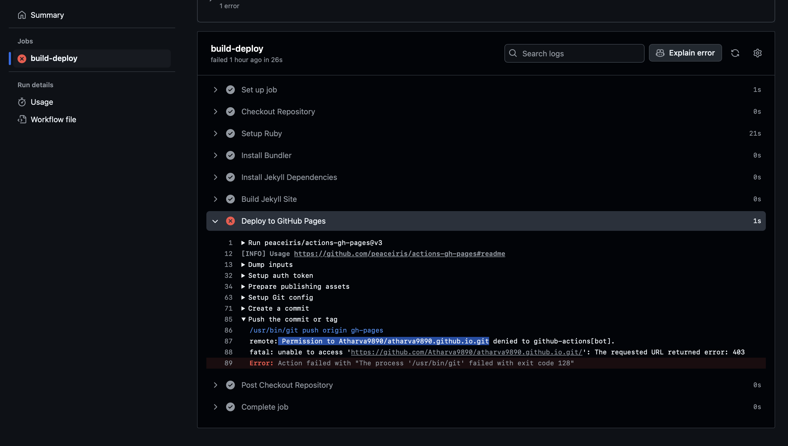
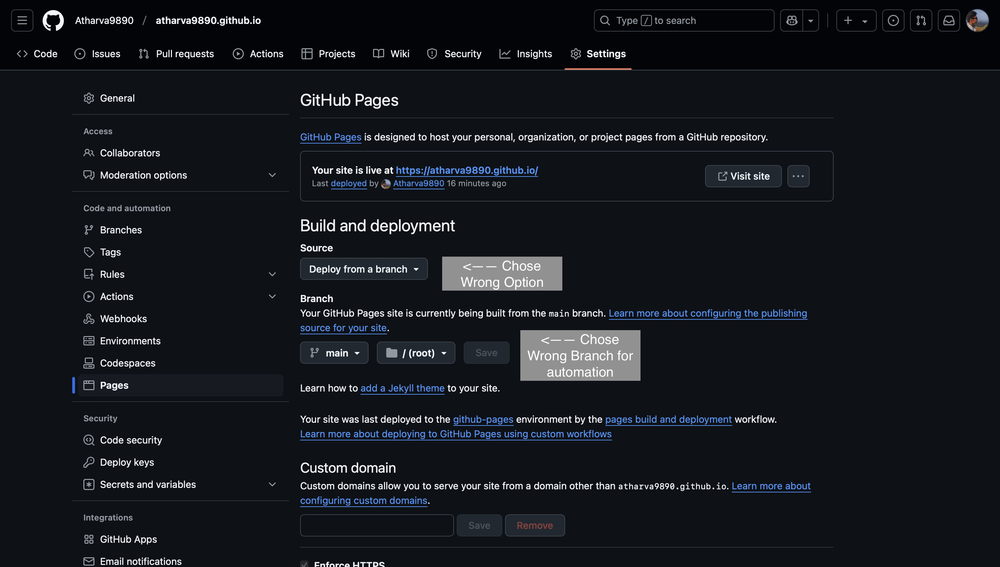
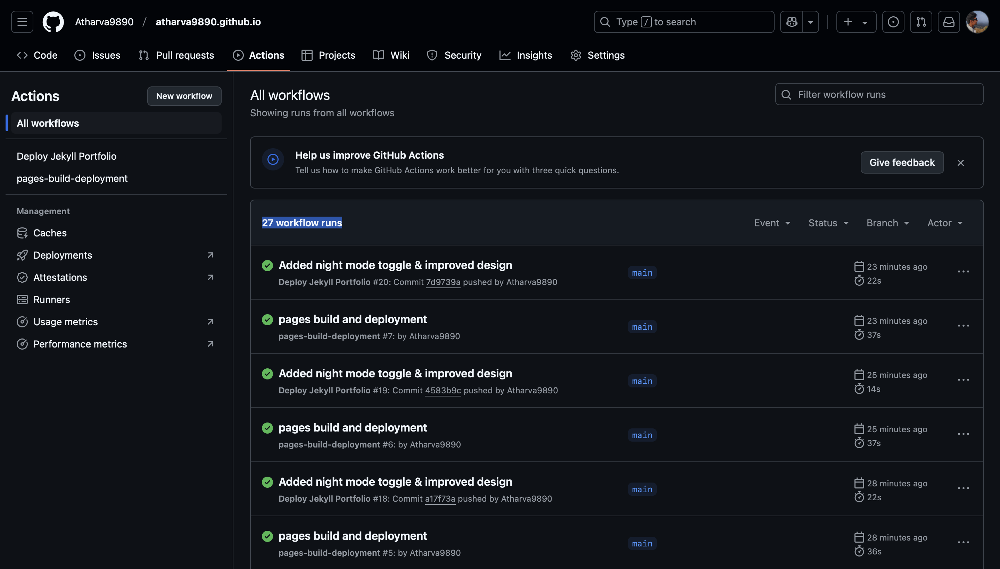

This site showcases my projects, skills, and experience.
I am a graduate student in Computer Science with experience in full-stack development, cloud computing, and software architecture.
AI-powered **document summarizer** using NLP & Transformers.
Image-based **emotion detection** with CNNs & OpenCV.
Real-time collaborative editor like **Google Docs**.
Music recommendation system based on user preferences.
Algorithm **visualization tool** for sorting & graphs.
Integrated **Stripe & PayPal** payment gateway with fraud detection.
High-speed in-memory cache like **Redis**, built from scratch.
GitHub Link✔ **Step 1:** Created a new GitHub repository and set up Jekyll.
✔ **Step 2:** Installed Jekyll and Bundler on the local machine.
✔ **Step 3:** Configured GitHub Pages to deploy from the `main` branch using GitHub Actions.
✔ **Step 4:** Wrote a custom workflow for **GitHub Actions** to automate build & deployment.
✔ **Step 5:** Encountered permission issues with GitHub Actions (fixed with Personal Access Token).
✔ **Step 6:** Configured `_config.yml` and ignored `_site/` to allow automatic builds.
✔ **Step 7:** Successfully deployed the portfolio with automated updates.
💡 **Installation Error(Ruby Bundler couldn't install):**
💡 **Ruby version didn't fiund issue & fix:**
💡 **GitHub Actions permission error:**
💡 **GitHub Pages build bug & fix:**
💡 **Overall Deployements for final Page:**
💡💭 Honest Opinion on Jekyll – From a MERN Developer’s POV Ah yes, Jekyll, the static site generator that feels like it time-traveled from 2010 and refuses to leave. No real-time updates, no dynamic content, and let’s not even talk about its Liquid templates (which feel like a relic from the Stone Age). As a MERN stack developer, I'm used to fast, reactive, API-driven web apps—Jekyll, on the other hand, is just HTML in disguise with a sprinkle of Ruby dust. Sure, it gets the job done, but it feels like handcrafting a website with chisels and stone tablets instead of using a proper framework. And let’s not forget GitHub Actions troubleshooting, which was basically me debugging YAML files for an eternity just to get a static site online. In React/Next.js, I’d have a full-blown CMS-powered portfolio with animations and real-time data in the time it took Jekyll to “build” one page. Final verdict? Jekyll is fine… if you want a website that looks like it was made when Internet Explorer was still a thing. 🚀
Email: your-email@example.com
LinkedIn: Atharva's LinkedIn
GitHub: Atharva's GitHub